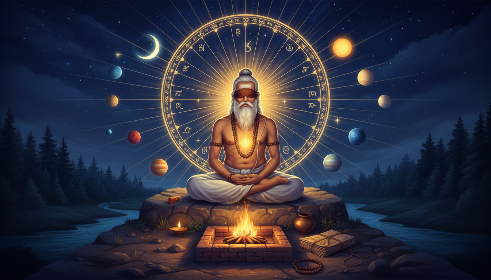

1. The boy who was born into permanent darkness
Start with the strangest fact about Dirghatamas, because it is the part almost nobody tells you, and it is the key to everything in this article.

He was born blind. Not blind in the sense of poor eyesight. Blind — and permanently so, by curse.
The story is in the Mahabharata, Book 1, Adi Parva, chapter CIV, and it runs like this. Brahma's son Angiras had two sons: Utathya and Brihaspati. Utathya married Mamata, and they became the parents of Dirghatamas. Now Brihaspati — the same Brihaspati that Jyotisha calls Brihaspati, the planet Jupiter, Guru of the gods — came to Mamata while she was pregnant, and his intent was not chaste. Mamata refused, and gave the reason that a child already knowledgeable in the Vedas and the Vedangas could not share a womb with a second seed of equal power.
Brihaspati did not listen. When his semen entered the womb, the foetus cried out to him to withdraw — there was no room for a second child. When Brihaspati paid no heed, the foetus stomped the semen out himself, and it fell onto the ground. Brihaspati, angered at what he took as an insult, cursed the child to be born blind.
Hence the name. The child was called Dirghatamas — dīrgha-tamas, "one for whom darkness is constant." The blindness was not an accident of birth. It was a punishment, and the name was the sentence.
Now hold that fact next to this one: this is the seer whose hymns (Rigveda I.140–164) contain the clearest early references in the entire Vedic corpus to a wheel of 360 spokes set in the sky, and the whole family of numbers that goes with it — 12, 24, 36, 48, 60, 72, 108, 432, 720. He was the man who could not see the sun, and he is the man who gave us the wheel.
2. The household that rejected him, and the one rule he made anyway
Dirghatamas married a brahmin woman named Pradveshi. They had several children, the eldest being Gautama Dirghatamas. But the children grew up to be unethical and greedy, and they ruined their father's standing as a respectable sage. Eventually the community of sages and his students abandoned him.
His response is one of the strangest pieces of dharma-making in the Mahabharata, and almost nobody knows it exists.
Dirghatamas, wounded by his wife's contempt — she said he was not a real husband, neither a protector (pati) nor a supporter (bharti), and she had raised the children alone — angrily established a new rule of dharma: a woman should marry only once in life, whether her husband is alive or dead.
Read that again. A man betrayed by his wife and his sons does not curse them. He writes a law. And the law is a law about marriage, tightened, not loosened. Where he had been wounded in the one place the world calls permanent, he made that place permanent forever — but turned the wound into a rule that protects every woman after him.
And then his own sons, enraged by the rule, tied him to a raft and threw him into the Ganga.
3. The river, the king, and the six sons of the north
Dirghatamas floated downstream until King Bali rescued him — the king happened to be performing ritual ablutions in the holy river at the time. Grateful, the sage granted the king a boon.
The king asked Dirghatamas to engage in niyoga — ritual commissioning — so that Queen Sudeshna might be able to have children. Dirghatamas assented. But the Queen sent him a woman of low birth instead, and with that woman Dirghatamas fathered Kakshivan and ten more sons. Kakshivan was to become the progenitor of the Gotama family of rishis — the same Gotama line that would one day produce Gautama, and would be remembered in the Upanishads as Gautama Buddha.
Later, when Dirghatamas learned he had been deceived, King Bali prevailed upon Queen Sudeshna to bear children by the sage herself. She bore six sons, and each was given a kingdom named after him: Anga, Vanga, Kalinga, Pundra, Suhma, and Odra. These are the founding kings of the north-east, the Gangetic plain, and Odisha.
There is a second layer here that has direct bearing on the man himself. Dirghatamas was the reputed purohita — chief priest — of King Bharata (Aitareya Brahmana VIII.23), one of the earliest kings of the land, after whom India itself is named Bharata. So: the blind, discarded, river-thrown sage became the priest of the king the country is named after.
And the family he sired became the beginning of the rishi line that includes Gautama Maharishi, Nodhas, and Vamadeva — the seer of the fourth Mandala of the Rigveda. Wikipedia puts the number plainly: Dirghatamas together with the Gotama family accounts for almost 150 of the 1000 hymns of the Rigveda. Roughly one hymn in seven.
There is a last detail worth holding, because it is pure occult: in the Ganesha Purana, Vamadeva curses a gandharva who accidentally trampled him, transforming the gandharva into a mouse. When the gandharva begged for mercy, the sage added that as a mouse it would assume the honourable role of the vahana — the mount — of Ganesha. The lineage that descends from the blind seer ends up carrying the god of obstacles on its shoulders.
4. The 360-spoke wheel: the oldest clear statement of the zodiac in the Rigveda
Now the part that makes this a Jyotisha article and not a piece of religious history.
Scholars have long claimed that the Babylonians invented the zodiac of 360 degrees around 700 BCE. But as old as the Rigveda itself — the oldest Vedic text — there are, in the scholarly reading, clear references to a chakra or wheel of 360 spokes placed in the sky. The number 360, and its relatives — 12, 24, 36, 48, 60, 72, 108, 432 and 720 — occur commonly in Vedic symbolism.
And in the hymns of the rishi Dirghatamas (Rigveda I.140–164) we have the clearest such references.
This is the whole finding, and it should be stated plainly because it is extraordinary and rarely said: the man who was cursed blind is the man in whom the Vedic corpus most clearly describes a 360-spoked sky. Not a blind man guessing at a wheel. A man who had every reason never to look at the sky, and who wrote about it with a precision that later Jyotisha would spend two thousand years refining.
Understand what "360 spokes" means in a working astrological sense. It is not decoration. It is the assertion that the sky is a circle divided into equal units, and that those units are countable. Twelve of them make a sign. Twenty-seven make a lunar mansion. Ninety make a degree-quadrant in a different counting. The wheel is the fundamental object, and the spoke is the unit of measurement. Every technique in Jyotisha — the sign, the mansion, the pada, the dasha — is a decision about how finely to cut that wheel.
5. How a 360-day year became 27 mansions, four padas, and 108 steps
Here is the mechanism, and it is documented, and it explains why Dirghatamas' number family matters so much to a remedy.
During the Bronze Age, around 2000 BCE, Indian astronomers used a calendar of 360 days, in which the Sun moved one degree per day and the Moon moved an average of 13 degrees per day. Dividing the 360-degree sky by the Moon's 13-degree daily path gives an orbital period of 27.69 days, and the astronomers rounded it to 28 nakshatras.
Later, when a 365-day solar calendar was adopted, the Moon's updated daily speed of 13.2 degrees gave a shorter orbit of 27.27 days. Astronomers then rounded down to 27 nakshatras and dropped the star Abhijit. The Chinese, working from the same inherited material, retained all 28 of their original lunar mansions.
And the crucial sentence: it was the 360-day calendar, not a modern 365-day calendar, that they used for the astronomical calculation of the number of days taken for the Moon to complete one sidereal cycle of 360°. The Vedic year was a 360-day solar year composed of twelve 30-day months.
So the wheel was not a metaphor that happened to resemble a calendar. The wheel was the calendar. 360 days = 360 degrees = 360 spokes. In later Jyotisha the term nakshatra came to denote 27 equal divisions of the ecliptic, each spanning 13° 20' — and 13° 20' × 27 = 360° exactly. Every nakshatra is divided into four padas.
Now do the arithmetic that makes this a remedy system rather than a history lesson:
- 27 nakshatras × 4 padas = 108 padas.
- 108 × 3° 20' = 360°. The finest workable resolution of the wheel, and it is the resolution you can actually hold in the fingers.
- 9 planets × 3 nakshatras each = 27. Each planet presides over a set of three nakshatras situated at a trine from each other.
- 27 × 13° 20' = 360°. And 120 years — the Vimshottari cycle — is exactly 120 × 3° = 360°: Ketu 7, Venus 20, Sun 6, Moon 10, Mars 7, Rahu 18, Jupiter 16, Saturn 19, Mercury 17 — the aggregate being 120, and 120 solar years being one-third of the wheel's circumference in degrees.
That last identity is not a coincidence the tradition needs to apologise for. The Vimshottari dasha is the 360-degree wheel measured in time instead of arc.
6. The working form: put the nakshatra-pada on the remedy
Now we can build something usable, and the reason it works is that it is the wheel itself, not a decoration on top of the wheel.
The working form: the remedy is counted in padas, not in days. Take the graha that is actually running your life right now — the mahadasha lord — and take the janma nakshatra, the mansion in which your Moon sits, which is the mansion whose lord opened your first dasha. Then take the mansion of the planet that is currently transiting over your Moon. Do not convert any of these to degrees. Work in padas: the janma nakshatra's four padas, the transiting planet's three nakshatras and their padas, and the dasha lord's padas. A remedy is then counted in units of 3° 20', which means a mala of 108 beads is exactly one full turn of the wheel in remedy-units. One complete mala = 360 degrees = one whole cycle. That is not a mnemonic convenience. It is the wheel's own resolution, and it is why 108 is the bead count everywhere in the tradition.
The working form: each planet owns a trine of three nakshatras, so each planet owns three quarters of a quadrant. When you set a remedy for a planet, do not pick one sign for it. Pick its three nakshatras — the ones at trine from each other — and do the work in all three, in order. A planet's remedial strength is therefore built in three positions, not one. Most people strengthen a single sign and wonder why the result is thin. The wheel does not have single spokes.
The working form: the Abhijit gap is a usable diagnostic. The 28th mansion was dropped and the 27 kept, which means the wheel has one deliberate omission in it — and it is the one mansion that sits exactly at the hinge between the two halves of the zodiac. A chart or a transit pattern that keeps landing on the seam where a mansion is missing is not a coincidence of random chance; it is where the wheel is least resolved and least protected. Note where in your chart that hinge falls and treat it as the soft joint in the structure. Remedies for a hinge-deficit are structural: strengthen the two trine-mansions on either side of it, not the mansion itself.
The working form: 120 years, 360 degrees, and the Sade Sati arithmetic. Saturn's transit is seven and a half years — sade sati, literally "seven and a half" — because Saturn spends about two and a half years in each sign and moves through three signs, the twelfth, the first and the second from the natal Moon. In the alternate reckoning, Sade Sati begins when Saturn transits 45 degrees before the natal Moon and ends 45 degrees past it; a Moon at 3 degrees in Taurus begins the transit when Saturn reaches 18 degrees of Pisces, in the mansion of Revati, and ends it at 18 degrees of Gemini. This is the wheel being read in the units of the wheel. Set your remedy count to the pada that Saturn is actually crossing, and let the count be a third of a sign — because a third of a sign is what a single Saturn transit-step actually is.
7. The brick altar: Rigveda 1.143 and the year built in brick
There is a second body of Dirghatamas' work that is almost never mentioned alongside the astronomy, and it is the reason the wheel was not only counted but built.
Rigveda 1.143 is the brick-altar hymn — the construction of the fire altar, the vedi, brick by brick, as the body of the year. It is significant enough that a dedicated study of it exists: Apāṁ Napāt, Dirghatamas and Construction of the Brick Altar: Analysis of RV 1.143, edited by Asko Parpola, Masato Fujii and Stanley Insler, published in Vedic Investigations, volume 1, from the proceedings of the 12th World Sanskrit Conference.
This is the occult spine of the article. The altar was not a platform for the fire. The altar was the year, given a body in fired brick — laid course by course, in a counted sequence, so that the sacrificial year stood physically in the world with its head pointing in a fixed direction. The same scholars who study the 360-spoke sky wheel and the brick altar of RV 1.143 are looking at the same seer's two masterworks: the geometry of the year, and its construction.
And note the craft term. The apāṁ napāt of the hymn title is "the offspring of the waters" — the fire born of water, the flame that is also the sea, standing at the centre of a structure made of earth. The brick altar is a yantra: a geometric pattern with an axis, in a fixed orientation, with the fire at the centre and the directions radiating from it.
The working form: build the year as a yantra before you enter it. Lay out your remedy space with an explicit axis and an explicit centre, and assign the four cardinal directions to the four quarters the way the altar did — with the fire, or the lamp, or the recitation seat, at the exact centre. The Vastu tradition that grew out of this lineage describes the same principle in architectural form: the designs align spaces with natural forces like sunlight, wind, geomagnetic field and gravity, using geometric patterns (yantra), symmetry and directional alignments. So: before the transit, set the geometry. Face the direction your planet rules. Place the offering in that quarter of the space you are working in. Keep the centre for the fire. The altar was a year made navigable — and a remedy performed inside an unaligned space is a year with no compass.
8. The inner light: what the blind seer saw
Now the second half of the topic, and the reason the title says inner light.
The blind seer's most famous poem is the Asya Vamasya, Rigveda 1.164 — a hymn of riddles that scholars have argued about for a century. Its verses are apothegms of exactly this shape:
He who knows the father below by what is above, and he who knows the father who is above by what is below is called the poet.
And the famous line from 1.164.46:
There is One Being (Ekam Sat) which is called by many names.
This is the blind man's method. He cannot see the wheel, so he describes the relations between positions instead of the positions themselves — father below known by what is above, father above known by what is below. That is a technique for reading a structure from its cross-references rather than from its surface. It is also, precisely, what a natal chart is: not a picture of the sky, but a set of relations in which each position is legible only through another.
The working form: diagnose by trine, not by sign. The same trick Dirghatamas used. You do not read the afflicted house in isolation; you read it through what is above and below it. When a planet is troubled, look at the grahas in the third from it and the eleventh from it — the trine axis — and let the reading of the trouble come from those two, with the afflicted planet itself as the item to be resolved. The chart is read as a cross-reference system, not as a list of twelve separate rooms.
The working form: Ekam Sat as a one-cause diagnosis. The Asya Vamasya's claim is that the apparent many is one. In remedial astrology the professional failure is almost never too little effort — it is too many causes. Nine grahas, twelve houses, dashas, transits, divisional charts, and the result is a remedy list with fourteen items on it and no force behind any of them. The blind seer's discipline is the opposite: find the one thing under the many names. Name one planet. Name one pada. Do the one thing, and let the wheel supply the rest. One cause, treated properly, outperforms seven causes treated politely.
The working form: the blind seer's ladder — go inward through the koshas. The Taittiriya Upanishad's Ananda Valli organises the layers of the self as concentric sheaths: Annamaya (food-sheath) enveloping Pranamaya (breath-sheath), enclosing Manomaya (mind-sheath), inside which is Vijnanamaya (intellect-sheath), and finally the innermost, deepest Anandamaya. That is a route inward, layer by layer, and it is also the route out of a remedy that is not working. Most people stop at Annamaya — the body, the diet, the gemstone, the routine. The ladder says go deeper. Pranamaya is next: the breath. And here the practice is genuinely specific and old. Pranayama in the classical sense is the regulation of prāṇa, and in the Hatha tradition it developed into a range of breath-control practices including kumbhaka (breath retention) and bandha (locks), with the practice of nadi shodhana (alternate nostril breathing) and ujjayi (victorious breath) as the standard forms. The stated effect in the Hatha sources is to unblock the sushumna nadi through which kundalini rises.
So the blind seer's remedy for a chart that will not move is a ladder, and the second rung is the breath. Not because breath is mystical, but because the padā — the step — is the unit of the wheel, and the breath is the fastest way to change which step you are standing on. The remedy count of 108 beads is one wheel-turn; the breath of one round of nadi shodhana is one pada of attention. They are the same motion at two scales.
9. The working form: the axis, not the lamp
Pulling it together, and giving you the version you can actually perform tonight.
The working form: the blind seer's axis. A man who cannot see the sky learned to read it by cross-reference — the father below known by what is above. Build your remedy that way. Pick the one graha under the pressure. Write down its trine pair — the third from it and the eleventh from it. Write down the janma nakshatra of the Moon, and the pada within it that the current dasha lord and the current transit are jointly crossing. That single pada is your working position: one mansion, one step, 3° 20' of the wheel. Do the japa there, count 108, face the direction that graha rules, and put the offering in that quarter. One graha, one pada, one direction, one count.
The working form: the fixed point that is not where you think it is. The dhruva nakshatra — the Pole Star — is personified in the Mahabharata as the son of Uttānapāda and grandson of Manu, and dhruva means unshakeable, immovable, fixed, eternal. But the same text records the uncomfortable fact: at the likely period of the recension of the Mahabharata, Polaris was still several degrees away from the celestial pole. The ancient fixed point was not astronomically fixed. It was a ritual fixed point — something declared fixed by act, not by astronomy.
That is the most useful thing in this article for anyone doing transit-alignment work. Your reference point does not have to be astronomically perfect to be axis-giving. A lamp, a mark on a floor, a fixed seat in a fixed corner — declared fixed by your act of setting it — is a dhruva. The sky's own pole drifted. The ritual pole does not. So: choose a physical anchor for your remedy cycle and set it deliberately at the start of the transit window, then keep the count tied to it. This is the same principle as the one the Vishnu Purana and Bhagavata Purana preserve about Dhruva himself, the ascetic devotee of Vishnu who as a five-year-old went into the forest to ask God directly whether he would be born in his stepmother's womb, was taught the mantra Om Namo Bhagavate Vasudevaya by Narada, and stood six months without food or water until Vishnu appeared — and then sang the Dhruva-stuti in twelve verses. A fixed point established by an act of will, and the act is repeatable.
The working form: what the wheel gives you that a list does not. The four padas of a nakshatra, the 108 beads, the 120-year cycle, the 360-degree arc, the trine triple of mansions per planet, the brick altar laid in a counted geometry around a central fire, the kosha ladder from food to bliss, the dhruva declared fixed by act — every one of these is a count, and every count is a thing you can do a specific number of times. That is the whole secret of the blind seer's method. He could not see. So he counted. A remedy that is counted out — padas, beads, degrees, bricks, courses, years — is a remedy that survives the days you are tired, because it does not require you to feel inspired, only to keep count. Keep the count and the wheel turns whether or not you can see it.
10. What this practice is, and what it is not
It is worth being precise, because "Vedic" gets used loosely.
This is not a claim that Dirghatamas invented Jyotisha, and it is not a claim that the 360-spoke wheel proves the Rigveda knew modern astronomy. It is a narrower and more useful claim: that in the hymns of Rigveda I.140–164 the wheel of 360 spokes and its number family are described with a clarity that is unmatched in the Vedic corpus; that this wheel was the 360-day solar year of twelve 30-day months, which was the actual calendar used for the Moon's sidereal cycle; and that the man who wrote it was the blind sage cursed before birth, whose other masterwork, Rigveda 1.143, built the year in brick around a central fire.
What is offered here is therefore a practice, and the practice has one instruction at its centre: work the wheel in its own units. The pada is 3° 20'. The mala is 108. The mala's turn is 360°. The dasha cycle is 120 years = a third of the circle. The planet's strength is built at a trine of three mansions, not one sign. The chart is read by cross-reference, below and above, the way a blind man reads the sky. The remedy is counted, the axis is declared, the year is built before it is entered.
That is the tradition's actual claim about itself, and it is older than the word Jyotisha. The sky is not a thing to be looked at. It is a thing to be counted, and then to be built. A seer who was denied his eyes gave us the wheel, the count, and the altar. That is a better inheritance than a lamp.
Sources
3. Dasha (astrology) - Wikipedia)
5. Jupiter (astrology) - Wikipedia)
- Dirghatamas - Wikipedia
- Nakshatra - Wikipedia
- Sade Sati - Wikipedia
- Vamadeva - Wikipedia
- Devala - Wikipedia
- Dhruva - Wikipedia
- Parashara - Wikipedia
- Taittiriya Upanishad - Wikipedia
- Pranayama - Wikipedia
- Shiva Sutra - Wikipedia
- Vastu - Wikipedia
- Yajna - Wikipedia
- Ganesha - Wikipedia
- Nakshatra - Wikipedia
- Shani - Wikipedia